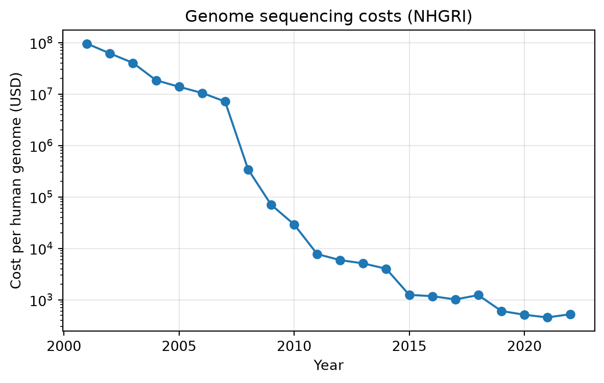
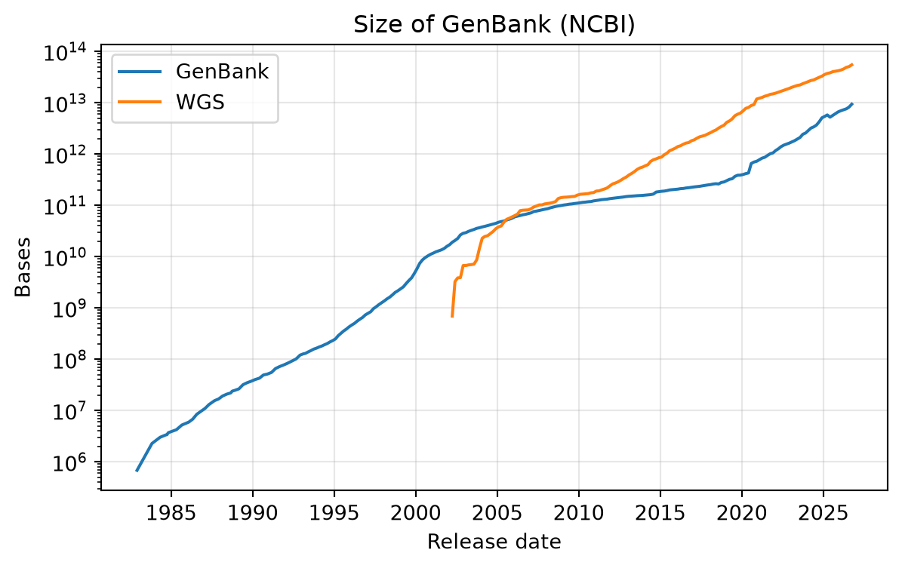
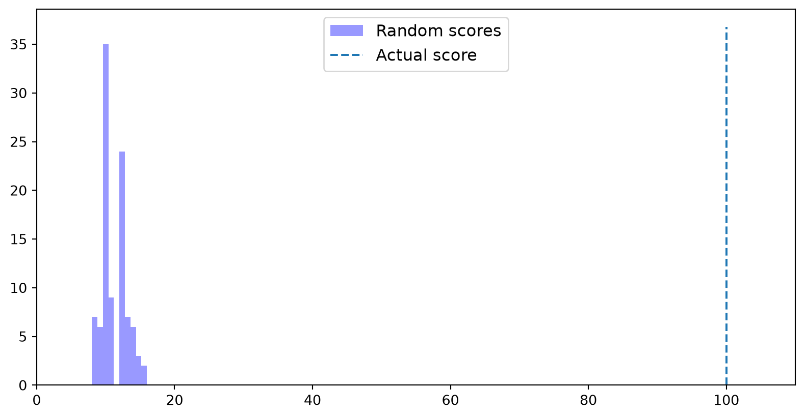

import skbio
from skbio.alignment import pair_align_nucl, TabularMSA
def local_pairwise_align_ssw(seq1, seq2):
res = pair_align_nucl(seq1, seq2, mode='local')
path = res.paths[0]
a1, a2 = path.to_aligned((seq1, seq2))
msa = TabularMSA([type(seq1)(a1), type(seq1)(a2)])
return msa, res.score, path.rangesBioinformatics 2
Sequence homology searching
MSDE
Lviv University
Homology searching
Goal
Use pairwise alignment to search databases of biological sequences to identify sequence homology.
- Homology: a pair of sequences derived from a common ancestral sequence.
- Homology searching is essential for inferring where a sequence came from and/or what it does.
- For an unannotated sequence it is very hard (really, impossible) to know what it is without more information.
Query and reference database
Query vs reference
A researcher searches their query against a reference database of annotated sequences to learn:
- what function the sequence performs (if the reference has functional annotation)
- what organisms likely encode it in their genome (if the reference has taxonomic annotation)
Exercise: mystery sequence
Exercise
Whose genome is this sequence encoded in? What is its function? Use Protein BLAST.
>mystery-sequence1
MFVFLVLLPLVSSQCVNLTTRTQLPPAYTNSFTRGVYYPDKVFRSSVLHSTQDLFLPFFS
NVTWFHAIHVSGTNGTKRFDNPVLPFNDGVYFASTEKSNIIRGWIFGTTLDSKTQSLLIV
NNATNVVIKVCEFQFCNDPFLGVYYHKNNKSWMESEFRVYSSANNCTFEYVSQPFLMDLE
GKQGNFKNLREFVFKNIDGYFKIYSKHTPINLVRDLPQGFSALEPLVDLPIGINITRFQT
LLALHRSYLTPGDSSSGWTAGAAAYYVGYLQPRTFLLKYNENGTITDAVDCALDPLSETK
CTLKSFTVEKGIYQTSNFRVQPTESIVRFPNITNLCPFGEVFNATRFASVYAWNRKRISN
CVADYSVLYNSASFSTFKCYGVSPTKLNDLCFTNVYADSFVIRGDEVRQIAPGQTGKIAD
YNYKLPDDFTGCVIAWNSNNLDSKVGGNYNYLYRLFRKSNLKPFERDISTEIYQAGSTPC
NGVEGFNCYFPLQSYGFQPTNGVGYQPYRVVVLSFELLHAPATVCGPKKSTNLVKNKCVN
FNFNGLTGTGVLTESNKKFLPFQQFGRDIADTTDAVRDPQTLEILDITPCSFGGVSVITP
GTNTSNQVAVLYQDVNCTEVPVAIHADQLTPTWRVYSTGSNVFQTRAGCLIGAEHVNNSY
ECDIPIGAGICASYQTQTNSPRRARSVASQSIIAYTMSLGAENSVAYSNNSIAIPTNFTI
SVTTEILPVSMTKTSVDCTMYICGDSTECSNLLLQYGSFCTQLNRALTGIAVEQDKNTQE
VFAQVKQIYKTPPIKDFGGFNFSQILPDPSKPSKRSFIEDLLFNKVTLADAGFIKQYGDC
LGDIAARDLICAQKFNGLTVLPPLLTDEMIAQYTSALLAGTITSGWTFGAGAALQIPFAM
QMAYRFNGIGVTQNVLYENQKLIANQFNSAIGKIQDSLSSTASALGKLQDVVNQNAQALN
TLVKQLSSNFGAISSVLNDILSRLDKVEAEVQIDRLITGRLQSLQTYVTQQLIRAAEIRA
SANLAATKMSECVLGQSKRVDFCGKGYHLMSFPQSAPHGVVFLHVTYVPAQEKNFTTAPA
ICHDGKAHFPREGVFVSNGTHWFVTQRNFYEPQIITTDNTFVSGNCDVVIGIVNNTVYDP
LQPELDSFKEELDKYFKNHTSPDVDLGDISGINASVVNIQKEIDRLNEVAKNLNESLIDL
QELGKYEQYIKWPWYIWLGFIAGLIAIVMVTIMLCCMTSCCSCLKGCCSCGSCCKFDEDD
SEPVLKGVKLHYTHomology vs similarity
Discrete vs continuous
- Query and homologous reference can be identical, or differ due to mutation events.
- Homology is a discrete variable: sequences either are or are not derived from a common ancestor.
- Similarity is a continuous variable: sequences can be more or less similar.
- “80% homologous” doesn’t make sense - what people mean is 80% similar, and therefore they hypothesize homology.
Similarity
Definition used here
\[\text{Similarity} = 1 - \text{Hamming distance}\]
- Hamming distance: the fraction of positions that differ between aligned sequences.
- Similarity: the fraction of positions that do not differ between aligned sequences.
Defining the problem
Approach
- One or more query sequences; for each we want to know which reference sequence(s) it is most similar to.
- Use accelerated local alignment function,
local_pairwise_align_ssw. - Run it many times: one query vs many references; inspect the highest-scoring alignment(s).
Runtime matters
Size of reference databases
- Greengenes 97% OTUs (SSU rRNA): hundreds of millions of bases
- Human genome: billions of bases
- NCBI non-redundant nucleotide database: trillions of bases
Heuristic algorithms apply rules to approximate the correct solution in a fraction of the runtime needed to be guaranteed the correct solution. Very common in bioinformatics.
We align nucleotide sequences here, but the same concepts apply to protein homology searching.
Loading annotated sequences
Greengenes
- A database of 16S rRNA gene sequences - a component of the archaeal and bacterial ribosome.
- One of about 200 genes encoded in the genomes of all known cellular organisms.
- Sequences are taxonomically annotated: gene sequence + taxonomy of the organism.
- Searching an unannotated 16S query against it lets us infer which organism it’s from.
Note
Accessed via the QIIME default reference project - convenient for experiments, but outdated; don’t use in practice.
Loading the reference database
import qiime_default_reference as qdr
import skbio
def load_taxonomy_reference_database(verbose=True):
# Load the taxonomic data
reference_taxonomy = {}
for e in open(qdr.get_reference_taxonomy()):
seq_id, seq_tax = e.strip().split('\t')
reference_taxonomy[seq_id] = seq_tax
# Load the reference sequences, and associate the taxonomic annotation with
# each as metadata
reference_db = []
for e in skbio.io.read(qdr.get_reference_sequences(), format='fasta', constructor=skbio.DNA):
if e.has_degenerates():
# ignore sequences that contain degenerate characters (other than A, C, G, T)
continue
seq_tax = reference_taxonomy[e.metadata['id']]
e.metadata['taxonomy'] = seq_tax
reference_db.append(e)
if verbose:
print("%s sequences were loaded from the reference database." % len(reference_db))
return reference_taxonomy, reference_db
reference_taxonomy, reference_db = load_taxonomy_reference_database()88452 sequences were loaded from the reference database.Inspecting reference sequences
Inspection
Specificity of taxonomic annotations differs between sequences:
DNA
-----------------------------------------------------------------------
Metadata:
'description': ''
'id': '1111883'
'taxonomy': 'k__Bacteria; p__Gemmatimonadetes; c__Gemm-1; o__; f__;
g__; s__'
Stats:
length: 1428
has gaps: False
has degenerates: False
has definites: True
GC-content: 61.90%
-----------------------------------------------------------------------
0 GCTGGCGGCG TGCCTAACAC ATGTAAGTCG AACGGGACTG GGGGCAACTC CAGTTCAGTG
60 GCAGACGGGT GCGTAACACG TGAGCAACTT GTCCGACGGC GGGGGATAGC CGGCCCAACG
...
1320 GCCGCGGTGA ATACGTTCCC GGGCCTTGTA CACACCGCCC GTCACGCCAT GGAAGCCGGA
1380 GGGACCCGAA ACCGGTGGGC CAACCGCAAG GGGGCAGCCG TCTAAGGTDNA
----------------------------------------------------------------------
Metadata:
'description': ''
'id': '4483258'
'taxonomy': 'k__Archaea; p__Crenarchaeota; c__Thermoprotei;
o__Thermoproteales; f__Thermoproteaceae; g__; s__'
Stats:
length: 2123
has gaps: False
has degenerates: False
has definites: True
GC-content: 58.36%
----------------------------------------------------------------------
0 CTGGTTGATC CTGCCGGACC CGACCGCTAT CGGGGTGGGG CTTAGCCATG CGAGTCAAGC
60 GCCCCAGGGA CCCGCTGGGG TGCGGCGCAC GGCTCAGTAA CACGTGGCCA ACCTACCCTC
...
2040 ATAATCTCCT TATTGTCTGA TCCTTATGCA TTTTCCTTTG GCCCATCCCG TGAATACGCG
2100 CGGTGAATAC GTCCCTGCCC CTTSubsampling and query sequences
Setup
- For runtime, work with a random sample of 5000 reference sequences.
- Extract query sequences from Greengenes, unannotated (simulate not knowing the organism).
- Trim queries (200 bases) - simulates a partial gene sequence, typical of current sequencing technologies; also faster.
- Some queries may also be in the subsampled reference database, some won’t - realistic.
Loading query sequences
def load_taxonomy_query_sequences(start_position=100, length=200):
queries = []
for e in skbio.io.read(qdr.get_reference_sequences(), format='fasta', constructor=skbio.DNA):
if e.has_degenerates():
continue
e = e[start_position:start_position + length]
queries.append(e)
return queries
queries = load_taxonomy_query_sequences()
queries = random.sample(queries, k=50)
queries[0]DNA
---------------------------------------------------------------------
Metadata:
'description': ''
'id': '318231'
Stats:
length: 200
has gaps: False
has degenerates: False
has definites: True
GC-content: 51.50%
---------------------------------------------------------------------
0 AAAAGTTGAT AACTTAGTGG CGGACGGGTG AGTAACGCGT GGGTAACCTG CCTTACACAG
60 GGGGATAACA CTTAGAAATA GGTGCTAATA CCGCATAAGC GCACAGTCCC GCATGGGACA
120 GAGTGAAAAA CATTAGTGGT GTAAGATGGA CCCGCGTCTG ATTAGCTTGT TGGCGGGGTA
180 ACGGCCCACC AAGGCGACGAProblem definition
Taxonomic assignment
- Query sequence \(q_i\), not taxonomically annotated.
- Reference database \(R\) of annotated sequences \(r_1, r_2, r_3, \ldots, r_n\).
- Infer taxonomy for \(q_i\) by identifying the most similar sequence(s) in \(R\) and associating their taxonomy with \(q_i\).
- We actually do know the taxonomy of \(q_i\), so we can evaluate the approach.
Realistic features of the setup
Be aware
- All query and reference sequences are homologous (all 16S rRNA). Sometimes you’ll use gene-specific databases (Greengenes), sometimes non-specific ones (NCBI nr) - the search process is similar.
- Distance between a query and its closest references varies widely: from an exact match to as little as 50% similarity.
Ultimate goal: scale up to search millions of sequences - e.g., 16S rRNA sequences collected from the environment with high-throughput sequencing.
A complete homology search function
local_alignment_search
- Aligns each query \(q_i\) with each reference sequence \(r_1, \ldots, r_n\).
- Top scoring alignments for each \(q_i\) are the best hits; we request
nof them. - Output: summary of the
nbest hits per query - alignment info + reference taxonomy. - From the best hits’ taxonomy, we infer the taxonomy of \(q_i\).
local_alignment_search
import pandas as pd
def local_alignment_search(queries, reference_db, n=5,
aligner=local_pairwise_align_ssw):
results = []
indices = []
for q in queries:
# first we'll compute all of the alignments and their associated scores
hits = []
for r in reference_db:
aln, score, _ = aligner(q, r)
hits.append([r.metadata['id'], score, aln,
r.metadata['taxonomy']])
# then we reverse-sort them by score, and return the n highest
# scoring alignments
best_hits = sorted(hits, key=lambda e: e[1], reverse=True)[:n]
if len(best_hits) == 0:
# if there are no hits, log that information
indices.append((q.metadata['id'], "no matches"))
results.append(("n/a", np.nan, np.nan, np.nan))
else:
# otherwise compile and track some information about the n
# best hits
for r_id, score, aln, r_tax in best_hits:
percent_similarity = (100 * (1. - aln[0].distance(aln[1])))
aln_length = aln.shape[1]
indices.append((q.metadata['id'], r_id))
results.append((r_tax, percent_similarity,
aln_length, score))
index = pd.MultiIndex.from_tuples(indices, names=['query', 'reference'])
columns = ['reference taxonomy', 'percent similarity',
'alignment length', 'score']
results = pd.DataFrame(results, index=index, columns=columns)
return resultsRunning the search
Runtime: 8.1096 sec per query| reference taxonomy | percent similarity | alignment length | score | ||
|---|---|---|---|---|---|
| query | reference | ||||
| 4356978 | 830290 | k__Bacteria; p__Proteobacteria; c__Gammaproteo... | 99.000000 | 200 | 390.0 |
| 140860 | k__Bacteria; p__Proteobacteria; c__Gammaproteo... | 99.000000 | 200 | 390.0 | |
| 747101 | k__Bacteria; p__Proteobacteria; c__Gammaproteo... | 99.000000 | 200 | 390.0 | |
| 4406968 | k__Bacteria; p__Proteobacteria; c__Gammaproteo... | 99.000000 | 200 | 390.0 | |
| 156459 | k__Bacteria; p__Proteobacteria; c__Gammaproteo... | 93.203883 | 206 | 338.0 | |
| 104065 | 776643 | k__Bacteria; p__Actinobacteria; c__Actinobacte... | 95.566502 | 203 | 350.0 |
| 948180 | k__Bacteria; p__Actinobacteria; c__Actinobacte... | 94.764398 | 191 | 317.0 | |
| 87098 | k__Bacteria; p__Actinobacteria; c__Actinobacte... | 93.782383 | 193 | 311.0 | |
| 271617 | k__Bacteria; p__Actinobacteria; c__Actinobacte... | 92.268041 | 194 | 302.0 | |
| 840374 | k__Bacteria; p__Proteobacteria; c__Gammaproteo... | 94.972067 | 179 | 302.0 | |
| 564174 | 900840 | k__Bacteria; p__Actinobacteria; c__Acidimicrob... | 86.500000 | 200 | 265.0 |
| 154599 | k__Bacteria; p__Actinobacteria; c__Acidimicrob... | 86.000000 | 200 | 260.0 | |
| 245495 | k__Bacteria; p__Proteobacteria; c__Alphaproteo... | 85.000000 | 200 | 250.0 | |
| 555635 | k__Bacteria; p__Actinobacteria; c__MB-A2-108; ... | 86.069652 | 201 | 250.0 | |
| 1117644 | k__Bacteria; p__Actinobacteria; c__Acidimicrob... | 85.000000 | 200 | 246.0 | |
| 346794 | 4238405 | k__Bacteria; p__Firmicutes; c__Clostridia; o__... | 90.000000 | 200 | 300.0 |
| 333363 | k__Bacteria; p__Firmicutes; c__Clostridia; o__... | 88.500000 | 200 | 285.0 | |
| 343551 | k__Bacteria; p__Firmicutes; c__Clostridia; o__... | 89.000000 | 200 | 282.0 | |
| 363631 | k__Bacteria; p__Firmicutes; c__Clostridia; o__... | 88.601036 | 193 | 276.0 | |
| 303326 | k__Bacteria; p__Firmicutes; c__Clostridia; o__... | 88.000000 | 200 | 272.0 |
Question
How many queries against how many references? Does this scale to millions of sequences? Estimate the runtime for one million queries.
Assigning taxonomy: hints
What is the most likely taxonomy of each query?
k,p,c,o,f,g,s= kingdom, phylum, class, order, family, genus, species.g__means the genus is unknown.- Your annotations don’t have to go down to species. Not assigning at a level implies uncertainty — better than a bad guess. Unsure of species →
s__; unsure of genus →g__, … - Use percent similarity, alignment length and score to decide how confident to be.
Closest vs known taxonomies
Comparison
Closest taxonomies for query 4356978 (in order):
k__Bacteria; p__Proteobacteria; c__Gammaproteobacteria; o__Vibrionales; f__Pseudoalteromonadaceae; g__Pseudoalteromonas; s__
k__Bacteria; p__Proteobacteria; c__Gammaproteobacteria; o__Vibrionales; f__Pseudoalteromonadaceae; g__Pseudoalteromonas; s__
k__Bacteria; p__Proteobacteria; c__Gammaproteobacteria; o__Oceanospirillales; f__Halomonadaceae; g__Candidatus Portiera; s__
k__Bacteria; p__Proteobacteria; c__Gammaproteobacteria; o__Vibrionales; f__Pseudoalteromonadaceae; g__Pseudoalteromonas; s__
k__Bacteria; p__Proteobacteria; c__Gammaproteobacteria; o__Vibrionales; f__Pseudoalteromonadaceae; g__Pseudoalteromonas; s__tunicata
Closest taxonomies for query 104065 (in order):
k__Bacteria; p__Actinobacteria; c__Actinobacteria; o__Actinomycetales; f__Microbacteriaceae; g__Microbacterium; s__
k__Bacteria; p__Actinobacteria; c__Actinobacteria; o__Actinomycetales; f__Microbacteriaceae; g__; s__
k__Bacteria; p__Actinobacteria; c__Actinobacteria; o__Actinomycetales; f__Microbacteriaceae; g__Agromyces; s__
k__Bacteria; p__Actinobacteria; c__Actinobacteria; o__Actinomycetales; f__; g__; s__
k__Bacteria; p__Proteobacteria; c__Gammaproteobacteria; o__Pseudomonadales; f__Moraxellaceae; g__; s__
Closest taxonomies for query 564174 (in order):
k__Bacteria; p__Actinobacteria; c__Acidimicrobiia; o__Acidimicrobiales; f__; g__; s__
k__Bacteria; p__Actinobacteria; c__Acidimicrobiia; o__Acidimicrobiales; f__koll13; g__; s__
k__Bacteria; p__Proteobacteria; c__Alphaproteobacteria; o__Rhizobiales; f__Bradyrhizobiaceae; g__; s__
k__Bacteria; p__Actinobacteria; c__MB-A2-108; o__0319-7L14; f__; g__; s__
k__Bacteria; p__Actinobacteria; c__Acidimicrobiia; o__Acidimicrobiales; f__EB1017; g__; s__
Closest taxonomies for query 346794 (in order):
k__Bacteria; p__Firmicutes; c__Clostridia; o__Clostridiales; f__; g__; s__
k__Bacteria; p__Firmicutes; c__Clostridia; o__Clostridiales; f__Ruminococcaceae; g__; s__
k__Bacteria; p__Firmicutes; c__Clostridia; o__Clostridiales; f__; g__; s__
k__Bacteria; p__Firmicutes; c__Clostridia; o__Clostridiales; f__; g__; s__
k__Bacteria; p__Firmicutes; c__Clostridia; o__Clostridiales; f__; g__; s__
Known taxonomy for query 4356978:
k__Bacteria; p__Proteobacteria; c__Gammaproteobacteria; o__Vibrionales; f__Pseudoalteromonadaceae; g__Pseudoalteromonas; s__
Known taxonomy for query 104065:
k__Bacteria; p__Actinobacteria; c__Actinobacteria; o__Actinomycetales; f__Microbacteriaceae; g__Microbacterium; s__
Known taxonomy for query 564174:
k__Bacteria; p__Actinobacteria; c__Acidimicrobiia; o__Acidimicrobiales; f__; g__; s__
Known taxonomy for query 346794:
k__Bacteria; p__Firmicutes; c__Clostridia; o__Clostridiales; f__; g__; s__
Reducing the runtime for DB searches
Why is it slow?
- On the order of 5–15 seconds per query against 5000 references.
- For every reference sequence: compute the \(F\) and \(T\) matrices, then trace back.
- Doesn’t scale to real-world applications: performing all pairwise alignments is prohibitively expensive.
- Pairwise alignment runtime scales quadratically with sequence length - but here lengths don’t change; we perform an expensive step many times.
- Database is fixed; queries all have the same length. How does runtime scale depending on query count?
Measuring runtime
import itertools
import numpy as np
def tabulate_local_alignment_search_runtime(queries, reference_db, n_query_sequences,
n_reference_sequences, search_function):
data = []
# iterate over pairs of (number of queries, number of references),
# computing the runtime three times for each pair
for nq, nr in itertools.product(n_query_sequences, n_reference_sequences):
for i in range(3):
current_queries = random.sample(queries, k=nq)
temp_reference_db = random.sample(reference_db, k=nr)
start_time = time.time()
_ = search_function(current_queries, temp_reference_db)
stop_time = time.time()
median_query_sequence_len = np.median([len(q) for q in current_queries])
median_reference_sequence_len = np.median([len(r) for r in temp_reference_db])
data.append((nq, nr, median_query_sequence_len, median_reference_sequence_len,
stop_time - start_time))
runtimes = pd.DataFrame(data=np.asarray(data),
columns=["Number of query seqs", "Number of reference seqs",
"Median query seq length", "Median reference seq length",
"Runtime (s)"] )
return runtimes
n_reference_sequences = [100]
n_query_sequences = [1, 5, 10, 15]
local_alignment_search_runtimes = tabulate_local_alignment_search_runtime(queries, reference_db,
n_query_sequences, n_reference_sequences, local_alignment_search)
local_alignment_search_runtimes| Number of query seqs | Number of reference seqs | Median query seq length | Median reference seq length | Runtime (s) | |
|---|---|---|---|---|---|
| 0 | 1.0 | 100.0 | 200.0 | 1440.0 | 0.192109 |
| 1 | 1.0 | 100.0 | 200.0 | 1428.5 | 0.155498 |
| 2 | 1.0 | 100.0 | 200.0 | 1412.0 | 0.163267 |
| 3 | 5.0 | 100.0 | 200.0 | 1431.5 | 0.773841 |
| 4 | 5.0 | 100.0 | 200.0 | 1436.5 | 0.813384 |
| 5 | 5.0 | 100.0 | 200.0 | 1446.5 | 0.802057 |
| 6 | 10.0 | 100.0 | 200.0 | 1439.0 | 1.597465 |
| 7 | 10.0 | 100.0 | 200.0 | 1432.0 | 1.588612 |
| 8 | 10.0 | 100.0 | 200.0 | 1418.0 | 1.516598 |
| 9 | 15.0 | 100.0 | 200.0 | 1451.5 | 2.558549 |
| 10 | 15.0 | 100.0 | 200.0 | 1429.5 | 2.369867 |
| 11 | 15.0 | 100.0 | 200.0 | 1426.0 | 2.397151 |
Runtime vs number of queries

Ways to reduce runtime
1. Perform fewer alignments
- Fewer queries? Researchers want to know what all their sequences are.
- Fewer references? We’d risk excluding useful references.
- Don’t search all queries against all references: a procedure, faster than alignment, that approximates which alignments are likely to be good (high scoring) — align only those.
2. Do the same work faster
Faster implementation, faster computer, or run in parallel: \(\text{new runtime} \approx \frac{\text{runtime}}{f}\)
Note
Production tools like BLAST combine these approaches.
Heuristic algorithms
The problem isn’t going away
- Computers are getting faster/cheaper - but sequencing is getting cheaper, so collections grow.
- Many think DNA sequencing is getting cheaper faster than computers are.
- More query sequences for the same money, and ever larger reference databases.


Heuristics for database searching
Idea
- Most alignments in a database search are unlikely to be good.
- Define a heuristic (rule) to decide which references are likely to give good alignments, and align only those.
- Deciding must be much faster than aligning.
- It must make good choices: excluded references can’t be results. A good heuristic is very unlikely to exclude the best alignment(s).
Key questions
- How often does the heuristic fail to get the right answer?
- How much faster is it - and is that worth not being guaranteed the best answer?
Random reference sequence selection
A straw man baseline
Select a random \(p\%\) of the reference sequences to align against: from \(R_s\) alignments (database size) to \(p \times R_s\) per query \(q_i\).
import random
def heuristic_local_alignment_search_random(
queries, reference_db, p, n=5, aligner=local_pairwise_align_ssw):
k = int(p * len(reference_db))
database_subset = random.sample(reference_db, k)
return local_alignment_search(queries, database_subset, n=n, aligner=aligner)
current_queries = random.sample(queries, k=10)
results = heuristic_local_alignment_search_random(current_queries, reference_db, p=0.10)
results| reference taxonomy | percent similarity | alignment length | score | ||
|---|---|---|---|---|---|
| query | reference | ||||
| 4356978 | 747101 | k__Bacteria; p__Proteobacteria; c__Gammaproteo... | 99.000000 | 200 | 390.0 |
| 4483078 | k__Bacteria; p__Proteobacteria; c__Gammaproteo... | 89.500000 | 200 | 295.0 | |
| 1106278 | k__Bacteria; p__Proteobacteria; c__Gammaproteo... | 89.320388 | 206 | 293.0 | |
| 79936 | k__Bacteria; p__Proteobacteria; c__Gammaproteo... | 87.980769 | 208 | 284.0 | |
| 91492 | k__Bacteria; p__Proteobacteria; c__Gammaproteo... | 87.000000 | 200 | 270.0 | |
| 4481422 | 104490 | k__Bacteria; p__Acidobacteria; c__Acidobacteri... | 88.500000 | 200 | 285.0 |
| 4469074 | k__Bacteria; p__Acidobacteria; c__Acidobacteri... | 86.567164 | 201 | 263.0 | |
| 628225 | k__Bacteria; p__Acidobacteria; c__[Chloracidob... | 79.126214 | 206 | 192.0 | |
| 216925 | k__Bacteria; p__Acidobacteria; c__[Chloracidob... | 78.640777 | 206 | 182.0 | |
| 1145925 | k__Bacteria; p__Spirochaetes; c__[Leptospirae]... | 76.354680 | 203 | 156.0 | |
| 510316 | 850305 | k__Bacteria; p__Proteobacteria; c__Alphaproteo... | 93.532338 | 201 | 333.0 |
| 615514 | k__Bacteria; p__Proteobacteria; c__Alphaproteo... | 91.542289 | 201 | 313.0 | |
| 4312813 | k__Bacteria; p__Proteobacteria; c__Alphaproteo... | 91.000000 | 200 | 310.0 | |
| 588630 | k__Bacteria; p__Proteobacteria; c__Alphaproteo... | 90.500000 | 200 | 305.0 | |
| 918212 | k__Bacteria; p__Proteobacteria; c__Alphaproteo... | 90.500000 | 200 | 305.0 | |
| 3976480 | 1147699 | k__Bacteria; p__Acidobacteria; c__DA052; o__El... | 78.817734 | 203 | 171.0 |
| 4364491 | k__Bacteria; p__Firmicutes; c__Bacilli; o__Bac... | 77.000000 | 200 | 166.0 | |
| 553058 | k__Bacteria; p__Verrucomicrobia; c__[Spartobac... | 76.000000 | 200 | 156.0 | |
| 1111776 | k__Bacteria; p__Firmicutes; c__Clostridia; o__... | 76.000000 | 200 | 153.0 | |
| 110822 | k__Bacteria; p__Verrucomicrobia; c__Verruco-5;... | 74.766355 | 214 | 151.0 | |
| 4313354 | 569939 | k__Bacteria; p__Proteobacteria; c__Gammaproteo... | 89.000000 | 200 | 282.0 |
| 334679 | k__Bacteria; p__Proteobacteria; c__Gammaproteo... | 88.500000 | 200 | 277.0 | |
| 837317 | k__Bacteria; p__Proteobacteria; c__Gammaproteo... | 87.500000 | 200 | 267.0 | |
| 271612 | k__Bacteria; p__Proteobacteria; c__Gammaproteo... | 86.500000 | 200 | 265.0 | |
| 4041623 | k__Bacteria; p__Proteobacteria; c__Gammaproteo... | 86.500000 | 200 | 257.0 | |
| 79153 | 317703 | k__Bacteria; p__Firmicutes; c__Erysipelotrichi... | 75.000000 | 196 | 139.0 |
| 2135976 | k__Bacteria; p__Firmicutes; c__Erysipelotrichi... | 73.232323 | 198 | 120.0 | |
| 43052 | k__Bacteria; p__Firmicutes; c__Clostridia; o__... | 72.448980 | 196 | 113.0 | |
| 372348 | k__Bacteria; p__Firmicutes; c__Clostridia; o__... | 72.448980 | 196 | 113.0 | |
| 658783 | k__Bacteria; p__Spirochaetes; c__Spirochaetes;... | 77.876106 | 113 | 101.0 | |
| 2214072 | 2460736 | k__Bacteria; p__Proteobacteria; c__Deltaproteo... | 93.434343 | 198 | 331.0 |
| 4396684 | k__Bacteria; p__Proteobacteria; c__Deltaproteo... | 92.592593 | 189 | 308.0 | |
| 979918 | k__Bacteria; p__Proteobacteria; c__Alphaproteo... | 91.052632 | 190 | 295.0 | |
| 4306787 | k__Bacteria; p__Proteobacteria; c__Deltaproteo... | 90.526316 | 190 | 290.0 | |
| 509341 | k__Bacteria; p__Proteobacteria; c__Deltaproteo... | 90.476190 | 189 | 288.0 | |
| 4358745 | 4439094 | k__Bacteria; p__Proteobacteria; c__Alphaproteo... | 77.073171 | 205 | 172.0 |
| 217167 | k__Bacteria; p__Proteobacteria; c__Alphaproteo... | 77.000000 | 200 | 166.0 | |
| 132287 | k__Bacteria; p__Proteobacteria; c__Alphaproteo... | 76.000000 | 200 | 156.0 | |
| 4333746 | k__Bacteria; p__Proteobacteria; c__Alphaproteo... | 93.023256 | 86 | 142.0 | |
| 4312813 | k__Bacteria; p__Proteobacteria; c__Alphaproteo... | 92.941176 | 85 | 140.0 | |
| 195213 | 362389 | k__Bacteria; p__Firmicutes; c__Clostridia; o__... | 92.964824 | 199 | 328.0 |
| 182354 | k__Bacteria; p__Firmicutes; c__Clostridia; o__... | 92.964824 | 199 | 328.0 | |
| 194921 | k__Bacteria; p__Firmicutes; c__Clostridia; o__... | 92.929293 | 198 | 326.0 | |
| 146226 | k__Bacteria; p__Firmicutes; c__Clostridia; o__... | 92.893401 | 197 | 324.0 | |
| 166848 | k__Bacteria; p__Firmicutes; c__Clostridia; o__... | 92.462312 | 199 | 323.0 | |
| 742016 | 213436 | k__Bacteria; p__Proteobacteria; c__Deltaproteo... | 81.818182 | 187 | 198.0 |
| 151577 | k__Bacteria; p__Proteobacteria; c__Deltaproteo... | 81.318681 | 182 | 194.0 | |
| 4195962 | k__Bacteria; p__Proteobacteria; c__Deltaproteo... | 80.327869 | 183 | 178.0 | |
| 2083156 | k__Bacteria; p__Proteobacteria; c__Deltaproteo... | 81.595092 | 163 | 176.0 | |
| 1127743 | k__Bacteria; p__Proteobacteria; c__Deltaproteo... | 78.857143 | 175 | 157.0 |
Manual evaluation
Evaluation
Closest taxonomies for query 4356978 (in order):
k__Bacteria; p__Proteobacteria; c__Gammaproteobacteria; o__Oceanospirillales; f__Halomonadaceae; g__Candidatus Portiera; s__
k__Bacteria; p__Proteobacteria; c__Gammaproteobacteria; o__; f__; g__; s__
k__Bacteria; p__Proteobacteria; c__Gammaproteobacteria; o__Alteromonadales; f__Psychromonadaceae; g__; s__
k__Bacteria; p__Proteobacteria; c__Gammaproteobacteria; o__Alteromonadales; f__Colwelliaceae; g__; s__
k__Bacteria; p__Proteobacteria; c__Gammaproteobacteria; o__Alteromonadales; f__Alteromonadaceae; g__Alteromonas; s__
Closest taxonomies for query 4481422 (in order):
k__Bacteria; p__Acidobacteria; c__Acidobacteria-6; o__iii1-15; f__; g__; s__
k__Bacteria; p__Acidobacteria; c__Acidobacteria-6; o__iii1-15; f__; g__; s__
k__Bacteria; p__Acidobacteria; c__[Chloracidobacteria]; o__; f__; g__; s__
k__Bacteria; p__Acidobacteria; c__[Chloracidobacteria]; o__RB41; f__; g__; s__
k__Bacteria; p__Spirochaetes; c__[Leptospirae]; o__[Leptospirales]; f__Sediment-4; g__SJA-88; s__
Closest taxonomies for query 510316 (in order):
k__Bacteria; p__Proteobacteria; c__Alphaproteobacteria; o__Rhizobiales; f__; g__; s__
k__Bacteria; p__Proteobacteria; c__Alphaproteobacteria; o__Rhizobiales; f__Methylobacteriaceae; g__; s__
k__Bacteria; p__Proteobacteria; c__Alphaproteobacteria; o__Rhizobiales; f__Methylobacteriaceae; g__Methylobacterium; s__komagatae
k__Bacteria; p__Proteobacteria; c__Alphaproteobacteria; o__Rhizobiales; f__; g__; s__
k__Bacteria; p__Proteobacteria; c__Alphaproteobacteria; o__Rhizobiales; f__Hyphomicrobiaceae; g__Hyphomicrobium; s__
Closest taxonomies for query 3976480 (in order):
k__Bacteria; p__Acidobacteria; c__DA052; o__Ellin6513; f__; g__; s__
k__Bacteria; p__Firmicutes; c__Bacilli; o__Bacillales; f__Bacillaceae; g__Bacillus; s__
k__Bacteria; p__Verrucomicrobia; c__[Spartobacteria]; o__[Chthoniobacterales]; f__[Chthoniobacteraceae]; g__; s__
k__Bacteria; p__Firmicutes; c__Clostridia; o__MBA08; f__; g__; s__
k__Bacteria; p__Verrucomicrobia; c__Verruco-5; o__WCHB1-41; f__; g__; s__
Closest taxonomies for query 4313354 (in order):
k__Bacteria; p__Proteobacteria; c__Gammaproteobacteria; o__Xanthomonadales; f__Xanthomonadaceae; g__Stenotrophomonas; s__acidaminiphila
k__Bacteria; p__Proteobacteria; c__Gammaproteobacteria; o__Xanthomonadales; f__Xanthomonadaceae; g__Stenotrophomonas; s__
k__Bacteria; p__Proteobacteria; c__Gammaproteobacteria; o__Thiohalorhabdales; f__Thiohalorhabdaceae; g__; s__
k__Bacteria; p__Proteobacteria; c__Gammaproteobacteria; o__Chromatiales; f__; g__; s__
k__Bacteria; p__Proteobacteria; c__Gammaproteobacteria; o__Thiotrichales; f__Piscirickettsiaceae; g__; s__
Closest taxonomies for query 79153 (in order):
k__Bacteria; p__Firmicutes; c__Erysipelotrichi; o__Erysipelotrichales; f__Erysipelotrichaceae; g__; s__
k__Bacteria; p__Firmicutes; c__Erysipelotrichi; o__Erysipelotrichales; f__Erysipelotrichaceae; g__RFN20; s__
k__Bacteria; p__Firmicutes; c__Clostridia; o__Clostridiales; f__Ruminococcaceae; g__Ruminococcus; s__
k__Bacteria; p__Firmicutes; c__Clostridia; o__Clostridiales; f__Ruminococcaceae; g__Ruminococcus; s__
k__Bacteria; p__Spirochaetes; c__Spirochaetes; o__Spirochaetales; f__Spirochaetaceae; g__Treponema; s__
Closest taxonomies for query 2214072 (in order):
k__Bacteria; p__Proteobacteria; c__Deltaproteobacteria; o__Desulfarculales; f__Desulfarculaceae; g__; s__
k__Bacteria; p__Proteobacteria; c__Deltaproteobacteria; o__Desulfobacterales; f__Desulfobacteraceae; g__Desulfococcus; s__
k__Bacteria; p__Proteobacteria; c__Alphaproteobacteria; o__Rhodospirillales; f__Rhodospirillaceae; g__; s__
k__Bacteria; p__Proteobacteria; c__Deltaproteobacteria; o__Desulfobacterales; f__Desulfobulbaceae; g__; s__
k__Bacteria; p__Proteobacteria; c__Deltaproteobacteria; o__BPC076; f__; g__; s__
Closest taxonomies for query 4358745 (in order):
k__Bacteria; p__Proteobacteria; c__Alphaproteobacteria; o__; f__; g__; s__
k__Bacteria; p__Proteobacteria; c__Alphaproteobacteria; o__Rhodobacterales; f__Rhodobacteraceae; g__; s__
k__Bacteria; p__Proteobacteria; c__Alphaproteobacteria; o__Rhodobacterales; f__Rhodobacteraceae; g__; s__
k__Bacteria; p__Proteobacteria; c__Alphaproteobacteria; o__Rhodobacterales; f__Rhodobacteraceae; g__Rhodobacter; s__
k__Bacteria; p__Proteobacteria; c__Alphaproteobacteria; o__Rhizobiales; f__Methylobacteriaceae; g__Methylobacterium; s__komagatae
Closest taxonomies for query 195213 (in order):
k__Bacteria; p__Firmicutes; c__Clostridia; o__Clostridiales; f__Lachnospiraceae; g__Blautia; s__
k__Bacteria; p__Firmicutes; c__Clostridia; o__Clostridiales; f__; g__; s__
k__Bacteria; p__Firmicutes; c__Clostridia; o__Clostridiales; f__Lachnospiraceae; g__; s__
k__Bacteria; p__Firmicutes; c__Clostridia; o__Clostridiales; f__; g__; s__
k__Bacteria; p__Firmicutes; c__Clostridia; o__Clostridiales; f__Lachnospiraceae; g__; s__
Closest taxonomies for query 742016 (in order):
k__Bacteria; p__Proteobacteria; c__Deltaproteobacteria; o__Syntrophobacterales; f__Syntrophobacteraceae; g__; s__
k__Bacteria; p__Proteobacteria; c__Deltaproteobacteria; o__[Entotheonellales]; f__; g__; s__
k__Bacteria; p__Proteobacteria; c__Deltaproteobacteria; o__Myxococcales; f__; g__; s__
k__Bacteria; p__Proteobacteria; c__Deltaproteobacteria; o__Myxococcales; f__; g__; s__
k__Bacteria; p__Proteobacteria; c__Deltaproteobacteria; o__Desulfuromonadales; f__; g__; s__
Known taxonomy for query 4356978:
k__Bacteria; p__Proteobacteria; c__Gammaproteobacteria; o__Vibrionales; f__Pseudoalteromonadaceae; g__Pseudoalteromonas; s__
Known taxonomy for query 4481422:
k__Bacteria; p__Acidobacteria; c__Acidobacteria-6; o__iii1-15; f__; g__; s__
Known taxonomy for query 510316:
k__Bacteria; p__Proteobacteria; c__Alphaproteobacteria; o__Rhizobiales; f__Hyphomicrobiaceae; g__Rhodoplanes; s__
Known taxonomy for query 3976480:
k__Bacteria; p__Acidobacteria; c__OS-K; o__; f__; g__; s__
Known taxonomy for query 4313354:
k__Bacteria; p__Proteobacteria; c__Gammaproteobacteria; o__Xanthomonadales; f__Xanthomonadaceae; g__; s__
Known taxonomy for query 79153:
k__Bacteria; p__Tenericutes; c__Mollicutes; o__Mycoplasmatales; f__Mycoplasmataceae; g__Mycoplasma; s__
Known taxonomy for query 2214072:
k__Bacteria; p__Proteobacteria; c__Deltaproteobacteria; o__Desulfarculales; f__Desulfarculaceae; g__; s__
Known taxonomy for query 4358745:
k__Bacteria; p__Proteobacteria; c__Alphaproteobacteria; o__Rhodobacterales; f__Rhodobacteraceae; g__; s__
Known taxonomy for query 195213:
k__Bacteria; p__Firmicutes; c__Clostridia; o__Clostridiales; f__; g__; s__
Known taxonomy for query 742016:
k__Bacteria; p__Proteobacteria; c__Deltaproteobacteria; o__DTB120; f__; g__; s__Defining the “right answer”
Evaluation criterion
If the most common taxonomy among the search results, at taxonomy_levels levels (how deep/specific), matches the known taxonomy, the algorithm got the right answer.
Vary taxonomy_levels to see how heuristics perform at different levels.
evaluate_search
import collections
def evaluate_search(queries, reference_db, reference_taxonomy, search_function,
taxonomy_levels, n=5, aligner=local_pairwise_align_ssw):
start_time = time.time()
search_results = search_function(current_queries, reference_db, n=n, aligner=aligner)
stop_time = time.time()
runtime = stop_time - start_time
per_query_runtime = runtime/len(queries)
data = []
indices = []
for q in queries:
q_id = q.metadata['id']
indices.append(q_id)
q_known_taxonomy = tuple(reference_taxonomy[q_id].split('; ')[:taxonomy_levels])
q_observed_taxonomies = collections.Counter()
for e in search_results['reference taxonomy'][q_id]:
q_observed_taxonomies[tuple(e.split('; ')[:taxonomy_levels])] += 1
q_observed_taxonomy = q_observed_taxonomies.most_common()[0][0]
data.append((q_known_taxonomy, q_observed_taxonomy))
index = pd.Index(indices, name='Query ID')
data = pd.DataFrame(data, index=index, columns=['Known taxonomy', 'Observed taxonomy'])
number_correct = np.sum(data['Known taxonomy'] == data['Observed taxonomy'])
fraction_correct = number_correct / data.shape[0]
return per_query_runtime, fraction_correct, dataFull search vs random heuristic
Full database search
taxonomy_levels = 5
runtime, fraction_correct, data = evaluate_search(current_queries, reference_db, reference_taxonomy,
local_alignment_search, taxonomy_levels=taxonomy_levels)
print('%1.2f seconds per query sequence' % runtime)
print('%1.2f%% correct answers' % (fraction_correct * 100.0))
print('Result details:')
for q_id in data.index:
print(q_id)
print(' ', data['Known taxonomy'][q_id])
print(' ', data['Observed taxonomy'][q_id])
print()7.28 seconds per query sequence
60.00% correct answers
Result details:
4356978
('k__Bacteria', 'p__Proteobacteria', 'c__Gammaproteobacteria', 'o__Vibrionales', 'f__Pseudoalteromonadaceae')
('k__Bacteria', 'p__Proteobacteria', 'c__Gammaproteobacteria', 'o__Vibrionales', 'f__Pseudoalteromonadaceae')
4481422
('k__Bacteria', 'p__Acidobacteria', 'c__Acidobacteria-6', 'o__iii1-15', 'f__')
('k__Bacteria', 'p__Acidobacteria', 'c__Acidobacteria-6', 'o__iii1-15', 'f__')
510316
('k__Bacteria', 'p__Proteobacteria', 'c__Alphaproteobacteria', 'o__Rhizobiales', 'f__Hyphomicrobiaceae')
('k__Bacteria', 'p__Proteobacteria', 'c__Alphaproteobacteria', 'o__Rhizobiales', 'f__Hyphomicrobiaceae')
3976480
('k__Bacteria', 'p__Acidobacteria', 'c__OS-K', 'o__', 'f__')
('k__Bacteria', 'p__GN04', 'c__GN15', 'o__', 'f__')
4313354
('k__Bacteria', 'p__Proteobacteria', 'c__Gammaproteobacteria', 'o__Xanthomonadales', 'f__Xanthomonadaceae')
('k__Bacteria', 'p__Proteobacteria', 'c__Gammaproteobacteria', 'o__Xanthomonadales', 'f__Xanthomonadaceae')
79153
('k__Bacteria', 'p__Tenericutes', 'c__Mollicutes', 'o__Mycoplasmatales', 'f__Mycoplasmataceae')
('k__Bacteria', 'p__Tenericutes', 'c__Mollicutes', 'o__Acholeplasmatales', 'f__Acholeplasmataceae')
2214072
('k__Bacteria', 'p__Proteobacteria', 'c__Deltaproteobacteria', 'o__Desulfarculales', 'f__Desulfarculaceae')
('k__Bacteria', 'p__Proteobacteria', 'c__Deltaproteobacteria', 'o__Desulfarculales', 'f__Desulfarculaceae')
4358745
('k__Bacteria', 'p__Proteobacteria', 'c__Alphaproteobacteria', 'o__Rhodobacterales', 'f__Rhodobacteraceae')
('k__Bacteria', 'p__Proteobacteria', 'c__Alphaproteobacteria', 'o__Rhodobacterales', 'f__Rhodobacteraceae')
195213
('k__Bacteria', 'p__Firmicutes', 'c__Clostridia', 'o__Clostridiales', 'f__')
('k__Bacteria', 'p__Firmicutes', 'c__Clostridia', 'o__Clostridiales', 'f__Lachnospiraceae')
742016
('k__Bacteria', 'p__Proteobacteria', 'c__Deltaproteobacteria', 'o__DTB120', 'f__')
('k__Bacteria', 'p__Nitrospirae', 'c__Nitrospira', 'o__Nitrospirales', 'f__[Leptospirillaceae]')
Random search through 10% of the database
import functools
heuristic_local_alignment_search_random_10 = functools.partial(heuristic_local_alignment_search_random, p=0.10)
runtime, fraction_correct, data = evaluate_search(current_queries, reference_db, reference_taxonomy,
heuristic_local_alignment_search_random_10,
taxonomy_levels=taxonomy_levels)
print('%1.2f seconds per query sequence' % runtime)
print('%1.2f%% correct answers' % (fraction_correct * 100.0))
print('Result details:')
for q_id in data.index:
print(q_id)
print(' ', data['Known taxonomy'][q_id])
print(' ', data['Observed taxonomy'][q_id])
print()0.72 seconds per query sequence
40.00% correct answers
Result details:
4356978
('k__Bacteria', 'p__Proteobacteria', 'c__Gammaproteobacteria', 'o__Vibrionales', 'f__Pseudoalteromonadaceae')
('k__Bacteria', 'p__Proteobacteria', 'c__Gammaproteobacteria', 'o__Alteromonadales', 'f__Alteromonadaceae')
4481422
('k__Bacteria', 'p__Acidobacteria', 'c__Acidobacteria-6', 'o__iii1-15', 'f__')
('k__Bacteria', 'p__Acidobacteria', 'c__Acidobacteria-6', 'o__iii1-15', 'f__')
510316
('k__Bacteria', 'p__Proteobacteria', 'c__Alphaproteobacteria', 'o__Rhizobiales', 'f__Hyphomicrobiaceae')
('k__Bacteria', 'p__Proteobacteria', 'c__Alphaproteobacteria', 'o__Rhizobiales', 'f__Beijerinckiaceae')
3976480
('k__Bacteria', 'p__Acidobacteria', 'c__OS-K', 'o__', 'f__')
('k__Bacteria', 'p__Actinobacteria', 'c__Actinobacteria', 'o__Actinomycetales', 'f__Streptomycetaceae')
4313354
('k__Bacteria', 'p__Proteobacteria', 'c__Gammaproteobacteria', 'o__Xanthomonadales', 'f__Xanthomonadaceae')
('k__Bacteria', 'p__Proteobacteria', 'c__Gammaproteobacteria', 'o__Xanthomonadales', 'f__Xanthomonadaceae')
79153
('k__Bacteria', 'p__Tenericutes', 'c__Mollicutes', 'o__Mycoplasmatales', 'f__Mycoplasmataceae')
('k__Bacteria', 'p__Tenericutes', 'c__RF3', 'o__ML615J-28', 'f__')
2214072
('k__Bacteria', 'p__Proteobacteria', 'c__Deltaproteobacteria', 'o__Desulfarculales', 'f__Desulfarculaceae')
('k__Bacteria', 'p__Proteobacteria', 'c__Deltaproteobacteria', 'o__Desulfarculales', 'f__Desulfarculaceae')
4358745
('k__Bacteria', 'p__Proteobacteria', 'c__Alphaproteobacteria', 'o__Rhodobacterales', 'f__Rhodobacteraceae')
('k__Bacteria', 'p__Proteobacteria', 'c__Alphaproteobacteria', 'o__Rhodobacterales', 'f__Rhodobacteraceae')
195213
('k__Bacteria', 'p__Firmicutes', 'c__Clostridia', 'o__Clostridiales', 'f__')
('k__Bacteria', 'p__Firmicutes', 'c__Clostridia', 'o__Clostridiales', 'f__Lachnospiraceae')
742016
('k__Bacteria', 'p__Proteobacteria', 'c__Deltaproteobacteria', 'o__DTB120', 'f__')
('k__Bacteria', 'p__Proteobacteria', 'c__Deltaproteobacteria', 'o__Desulfuromonadales', 'f__Desulfuromonadaceae')
Is random selection a good heuristic?
Observations
- Across many trials: the correct genus-level assignment about half as often as the full search.
- Results vary due to random selection of query and reference sequences.
Exercise
Re-run with fewer taxonomy levels (e.g., phylum) and more (e.g., species). How does this affect how often we get the right answer?
Composition-based reference selection
A smarter heuristic
If the overall nucleotide composition of a query is very different from that of a reference, the best alignment is unlikely to come from that pair - so don’t align them.
Question
How do we define “overall nucleotide composition” usefully?
GC content
Heuristic
GC content is fast to compute. Align only against the database_subset_size references with GC content most similar to the query.
database_subset_size = 500
def heuristic_local_alignment_search_gc(
queries, reference_db, database_subset_size, n=5,
reference_db_gc_contents=None,
aligner=local_pairwise_align_ssw):
results = []
if reference_db_gc_contents is None:
reference_db_gc_contents = \
{r.metadata['id'] : r.gc_content() for r in reference_db}
for q in queries:
query_gc_content = q.gc_content()
database_subset = []
for r in reference_db:
ref_gc_content = reference_db_gc_contents[r.metadata['id']]
# difference in GC content between reference and query;
# we'll sort and select reference sequences by this value
database_subset.append((abs(ref_gc_content - query_gc_content), r))
database_subset.sort(key=lambda x: x[0])
database_subset = [e[1] for e in database_subset[:database_subset_size]]
results.append(local_alignment_search(
[q], database_subset, n=n, aligner=aligner))
return pd.concat(results)GC content: results
heuristic_local_alignment_search_gc_2 = functools.partial(heuristic_local_alignment_search_gc,
database_subset_size=database_subset_size)
runtime, fraction_correct, data = evaluate_search(current_queries, reference_db, reference_taxonomy,
heuristic_local_alignment_search_gc_2,
taxonomy_levels=taxonomy_levels)
print('%1.2f seconds per query sequence' % runtime)
print('%1.2f%% correct answers' % (fraction_correct * 100.0))
print('Result details:')
for q_id in data.index:
print(q_id)
print(' ', data['Known taxonomy'][q_id])
print(' ', data['Observed taxonomy'][q_id])
print()0.71 seconds per query sequence
40.00% correct answers
Result details:
4356978
('k__Bacteria', 'p__Proteobacteria', 'c__Gammaproteobacteria', 'o__Vibrionales', 'f__Pseudoalteromonadaceae')
('k__Bacteria', 'p__Proteobacteria', 'c__Gammaproteobacteria', 'o__Alteromonadales', 'f__Colwelliaceae')
4481422
('k__Bacteria', 'p__Acidobacteria', 'c__Acidobacteria-6', 'o__iii1-15', 'f__')
('k__Bacteria', 'p__Acidobacteria', 'c__Acidobacteria-6', 'o__iii1-15', 'f__RB40')
510316
('k__Bacteria', 'p__Proteobacteria', 'c__Alphaproteobacteria', 'o__Rhizobiales', 'f__Hyphomicrobiaceae')
('k__Bacteria', 'p__Proteobacteria', 'c__Alphaproteobacteria', 'o__Rhizobiales', 'f__Hyphomicrobiaceae')
3976480
('k__Bacteria', 'p__Acidobacteria', 'c__OS-K', 'o__', 'f__')
('k__Bacteria', 'p__Verrucomicrobia', 'c__[Spartobacteria]', 'o__[Chthoniobacterales]', 'f__[Chthoniobacteraceae]')
4313354
('k__Bacteria', 'p__Proteobacteria', 'c__Gammaproteobacteria', 'o__Xanthomonadales', 'f__Xanthomonadaceae')
('k__Bacteria', 'p__Proteobacteria', 'c__Gammaproteobacteria', 'o__Xanthomonadales', 'f__Xanthomonadaceae')
79153
('k__Bacteria', 'p__Tenericutes', 'c__Mollicutes', 'o__Mycoplasmatales', 'f__Mycoplasmataceae')
('k__Bacteria', 'p__Tenericutes', 'c__Mollicutes', 'o__Acholeplasmatales', 'f__Acholeplasmataceae')
2214072
('k__Bacteria', 'p__Proteobacteria', 'c__Deltaproteobacteria', 'o__Desulfarculales', 'f__Desulfarculaceae')
('k__Bacteria', 'p__Proteobacteria', 'c__Deltaproteobacteria', 'o__', 'f__')
4358745
('k__Bacteria', 'p__Proteobacteria', 'c__Alphaproteobacteria', 'o__Rhodobacterales', 'f__Rhodobacteraceae')
('k__Bacteria', 'p__Proteobacteria', 'c__Alphaproteobacteria', 'o__Rhodobacterales', 'f__Rhodobacteraceae')
195213
('k__Bacteria', 'p__Firmicutes', 'c__Clostridia', 'o__Clostridiales', 'f__')
('k__Bacteria', 'p__Firmicutes', 'c__Clostridia', 'o__Clostridiales', 'f__')
742016
('k__Bacteria', 'p__Proteobacteria', 'c__Deltaproteobacteria', 'o__DTB120', 'f__')
('k__Bacteria', 'p__Proteobacteria', 'c__Deltaproteobacteria', 'o__Myxococcales', 'f__')
Exercise
Increase and decrease database_subset_size. How does this affect runtime and the fraction of correct answers?
kmer content
kmers
A kmer is a word (list of adjacent characters) of length k found within a sequence. overlap=True: kmers can overlap.
kmer heuristic
Shared kmers
Align the query only to the references containing the largest fraction of the kmers observed in the query.
This makes sense: we only align sequences when it looks like they share multiple length-k stretches not interrupted by substitutions or insertion/deletion mutations.
def fraction_shared_kmers(kmer_freqs1, kmer_freqs2):
"""Compute the fraction of kmers in kmer_freqs1 that are also in kmer_freqs2
k-mer counts are not incorporated in this distance metric.
"""
sequence1_kmers = set(kmer_freqs1)
num_sequence1_kmers = len(sequence1_kmers)
sequence2_kmers = set(kmer_freqs2)
shared_kmers = sequence1_kmers & sequence2_kmers
return len(shared_kmers) / num_sequence1_kmerskmer-based search
def heuristic_local_alignment_search_kmers(
queries, reference_db, database_subset_size, k, n=5,
reference_db_kmer_frequencies=None,
aligner=local_pairwise_align_ssw):
results = []
if reference_db_kmer_frequencies is None:
reference_db_kmer_frequencies = \
{r.metadata['id'] : r.kmer_frequencies(k=k, overlap=True) for r in reference_db}
for q in queries:
query_kmer_frequency = q.kmer_frequencies(k=k, overlap=True)
database_subset = []
for r in reference_db:
ref_kmer_frequency = reference_db_kmer_frequencies[r.metadata['id']]
s = fraction_shared_kmers(query_kmer_frequency, ref_kmer_frequency)
database_subset.append((s, r))
database_subset.sort(key=lambda x: x[0], reverse=True)
database_subset = [e[1] for e in database_subset[:database_subset_size]]
results.append(local_alignment_search(
[q], database_subset, n=n, aligner=aligner))
return pd.concat(results)kmer-based search
k = 7
heuristic_local_alignment_search_kmers_50 = functools.partial(heuristic_local_alignment_search_kmers, k=k, database_subset_size=database_subset_size)
runtime, fraction_correct, data = evaluate_search(current_queries, reference_db, reference_taxonomy,
heuristic_local_alignment_search_kmers_50,
taxonomy_levels=taxonomy_levels)
print('%1.2f seconds per query sequence' % runtime)
print('%1.2f%% correct answers' % (fraction_correct * 100.0))
print('Result details:')
for q_id in data.index:
print(q_id)
print(' ', data['Known taxonomy'][q_id])
print(' ', data['Observed taxonomy'][q_id])
print()1.64 seconds per query sequence
60.00% correct answers
Result details:
4356978
('k__Bacteria', 'p__Proteobacteria', 'c__Gammaproteobacteria', 'o__Vibrionales', 'f__Pseudoalteromonadaceae')
('k__Bacteria', 'p__Proteobacteria', 'c__Gammaproteobacteria', 'o__Vibrionales', 'f__Pseudoalteromonadaceae')
4481422
('k__Bacteria', 'p__Acidobacteria', 'c__Acidobacteria-6', 'o__iii1-15', 'f__')
('k__Bacteria', 'p__Acidobacteria', 'c__Acidobacteria-6', 'o__iii1-15', 'f__')
510316
('k__Bacteria', 'p__Proteobacteria', 'c__Alphaproteobacteria', 'o__Rhizobiales', 'f__Hyphomicrobiaceae')
('k__Bacteria', 'p__Proteobacteria', 'c__Alphaproteobacteria', 'o__Rhizobiales', 'f__Hyphomicrobiaceae')
3976480
('k__Bacteria', 'p__Acidobacteria', 'c__OS-K', 'o__', 'f__')
('k__Bacteria', 'p__GN04', 'c__GN15', 'o__', 'f__')
4313354
('k__Bacteria', 'p__Proteobacteria', 'c__Gammaproteobacteria', 'o__Xanthomonadales', 'f__Xanthomonadaceae')
('k__Bacteria', 'p__Proteobacteria', 'c__Gammaproteobacteria', 'o__Xanthomonadales', 'f__Xanthomonadaceae')
79153
('k__Bacteria', 'p__Tenericutes', 'c__Mollicutes', 'o__Mycoplasmatales', 'f__Mycoplasmataceae')
('k__Bacteria', 'p__Tenericutes', 'c__Mollicutes', 'o__Acholeplasmatales', 'f__Acholeplasmataceae')
2214072
('k__Bacteria', 'p__Proteobacteria', 'c__Deltaproteobacteria', 'o__Desulfarculales', 'f__Desulfarculaceae')
('k__Bacteria', 'p__Proteobacteria', 'c__Deltaproteobacteria', 'o__Desulfarculales', 'f__Desulfarculaceae')
4358745
('k__Bacteria', 'p__Proteobacteria', 'c__Alphaproteobacteria', 'o__Rhodobacterales', 'f__Rhodobacteraceae')
('k__Bacteria', 'p__Proteobacteria', 'c__Alphaproteobacteria', 'o__Rhodobacterales', 'f__Rhodobacteraceae')
195213
('k__Bacteria', 'p__Firmicutes', 'c__Clostridia', 'o__Clostridiales', 'f__')
('k__Bacteria', 'p__Firmicutes', 'c__Clostridia', 'o__Clostridiales', 'f__Lachnospiraceae')
742016
('k__Bacteria', 'p__Proteobacteria', 'c__Deltaproteobacteria', 'o__DTB120', 'f__')
('k__Bacteria', 'p__Nitrospirae', 'c__Nitrospira', 'o__Nitrospirales', 'f__[Leptospirillaceae]')
Question
How do runtime and accuracy compare to GC content and the full search?
Pre-computing reference database information
Reuse what doesn’t change
- The reference database rarely changes: pre-compute features of reference sequences once and reuse them.
- Computing all reference kmer frequencies is a lot of work (~a minute) - saved on every search.
reference_db_kmer_frequencies = {r.metadata['id']: r.kmer_frequencies(k=k, overlap=True)
for r in reference_db}
heuristic_local_alignment_search_kmers_50 = functools.partial(heuristic_local_alignment_search_kmers, reference_db_kmer_frequencies=reference_db_kmer_frequencies, k=k, database_subset_size=database_subset_size)Note
This last search is very similar to how BLAST works.
Statistical significance of a pairwise alignment
How good is an alignment?
Scores are hard to interpret
- An alignment score depends on query and reference lengths.
- Possibly also on their composition, depending on the substitution matrix.
- How do we determine how good a given alignment is? We can use a statistical approach.
Metrics of alignment quality
Candidate metrics
- alignment length (relevant for local, not global, alignment)
- pairwise similarity
- score
- number of substitutions (reported e.g. by BLAST)
- number of insertion/deletion (gap) positions
None of these are useful on their own.
Example: substitutions vs gaps
Example
Align:
GAAGCAGCAC
GAACAGAACFewest substitutions (zero!) - but many homologous-looking bases unaligned:
GAAGCAGCAC-----
GAA------CAGAACFewest gaps - but many substitutions and misaligned regions (e.g., CAG):
GAAGCAGCAC
GAACAGA-ACThe alignment score balances these features (and the scoring scheme can be adjusted) — but scores are hard to interpret, especially when we have only one or a few.
p-values and \(\alpha\)
p-value
An alignment represents a hypothesis about homology. Ask:
What fraction of the time would I obtain a score at least this good if my sequences are not homologous?
- High p-value (e.g., 25%) \(\rightarrow\) probably not a good alignment.
- Low p-value (e.g., 0.001%) \(\rightarrow\) probably good: such scores are achieved infrequently.
\(\alpha\)
Threshold set by how often we’re willing to be wrong. If \(p < \alpha\) \(\rightarrow\) statistically significant; otherwise not.
False positives and false negatives
Two ways to be wrong
- Call sequences homologous when they’re not \(\rightarrow\) false positive (type 1 error).
- Call sequences not homologous when they are \(\rightarrow\) false negative (type 2 error).
\(\alpha\) is a dial
- \(\alpha = 0.05\): accept a false positive ~1 in 20 times \(\rightarrow\) err on the side of false positives.
- \(\alpha = 1 \times 10^{-50}\): err on the side of false negatives.
- Turn up \(\rightarrow\) more FPs, fewer FNs. Turn down \(\rightarrow\) fewer FPs, more FNs.
Choosing \(\alpha\)
Application specific
- No hard-and-fast rule whether false positives or false negatives are better.
- Understand the biological question and the ramifications of each.
Question
When might you prefer false positives? When might you prefer false negatives?
Interpreting alignment scores in context
Empirical approach
- Align the pair of sequences and compute the score.
- Align many pairs of sequences similar to the query and reference, but known not to be homologous.
- Get these by shuffling (randomizing the order of bases in) the query.
- Compare the actual score to this distribution.
Random and shuffled sequences
Python code
DNA
--------------------------------------------------------
Stats:
length: 50
has gaps: False
has degenerates: False
has definites: True
GC-content: 54.00%
--------------------------------------------------------
0 TAAACTGCGA GTGTCCCGAC AGGCGTCACA CTTGCTATCA CCATCGTGTGdef shuffle_sequence(sequence):
# generate a list of the position indices (numbers) in sequence
randomized_order = list(range(len(sequence)))
# randomly rearrange the order of that list
random.shuffle(randomized_order)
# return a new sequence, where the positions are shuffled
return sequence[randomized_order]
shuffle_sequence(seq)DNA
--------------------------------------------------------
Stats:
length: 50
has gaps: False
has degenerates: False
has definites: True
GC-content: 54.00%
--------------------------------------------------------
0 CACCCCGCAT TGAGCGTCAG TCGATGGAGT CCGCGATGTT ATACACCTATDistribution of random scores
Python code
Score: 100.00Next let’s generate 99 random variants of that sequence with shuffle_sequence and compute the pairwise alignment for each of those variants against the query sequence. We’ll then look at the distribution of those scores.
def generate_random_score_distribution(sequence1, sequence2, n=99,
aligner=local_pairwise_align_ssw):
scores = []
for i in range(n):
# generate a randomized version of the first sequence
random_sequence = shuffle_sequence(sequence1)
# align it against the second sequence and save its score
_, score, _ = aligner(random_sequence, sequence2)
scores.append(score)
return scores
random_scores = generate_random_score_distribution(query_seq, query_seq, 99)Actual vs random scores
Plot
import seaborn as sns
def plot_score_distribution(actual_score, random_scores):
ax = sns.distplot(random_scores, kde=False, label="Random scores", color="b")
ax.plot([actual_score, actual_score], ax.get_ylim(), '--', label="Actual score")
# set the range of the x axis to be zero through 110% of the actual score
ax.set_xlim(0, actual_score + actual_score * 0.1)
ax.legend(loc=9, fontsize='large')
return ax
plot_score_distribution(actual_score, random_scores)
Empirical p-value
Data-driven p-value
- Count how many random scores are at least as high as the actual score; divide by the number of scores.
- Define \(\alpha\) before computing the p-value, so the p-value doesn’t influence the choice of \(\alpha\).
- Here \(\alpha = 0.05\): if \(p < 0.05\), the alignment is significant \(\rightarrow\) accept the homology hypothesis.
Python code
def fraction_better_or_equivalent_alignments(sequence1, sequence2, n=99,
aligner=local_pairwise_align_ssw):
# align sequence1 and sequence2 and store the score of the alignment
_, actual_score, _ = aligner(sequence1, sequence2)
# compute the distribution of randomized scores
random_scores = generate_random_score_distribution(sequence1, sequence2, n,
aligner=aligner)
# count the number of random scores at least as good as our actual score
count_better = 0
for s in random_scores:
if s >= actual_score:
count_better += 1
# add one to numerator and denominator to account for actual_score
return (count_better + 1) / (n + 1)
fraction_better_or_equivalent_alignments(query_seq, query_seq, 99) # 0.010.01\(0.01 < \alpha\) \(\rightarrow\) we accept the hypothesis that the sequences are homologous.
Notes on empirical p-values
Note
\[p = \frac{\#\text{ computed alignment scores} \geq \text{actual score}}{\#\text{ alignment scores computed}}\]
- Numerator and denominator both include the actual score \(\rightarrow\) the lowest achievable p-value is \(\frac{1}{99 + 1}\).
- More permutations (e.g., 999) \(\rightarrow\) more precision:
0.001. - At the lowest possible value, report the p-value as less than that value:
The alignment of our query and reference sequence was statistically significant, as determined by comparing our actual alignment score to random variants (\(p < 0.001\)).
Non-homologous sequences
Harder case
Two independently generated random sequences — we know they’re not homologous:
DNA
---------------------------------------------------------------------
Stats:
length: 250
has gaps: False
has degenerates: False
has definites: True
GC-content: 50.40%
---------------------------------------------------------------------
0 ACGATGCGTT TCATACCTAA CGACATTTGC ACCCATTACG GGGGCAACAG ATATAGGCGC
60 CCTGTATTTA GTTTAGGGTC CGTGAACACC TGTGTACTTT TCCGAGCGAG CGCTCGTGTC
120 GCACCGCTTT CCTGGAATGG GGACGGAATA GCCAGTTCCA ACCAGTTCTA GAATCGGTGC
180 CAAAGAGAGG TACGACAGAA CAGAAACGGA ACTAACCCCC GTGATTTGAT TAAGCTTTGC
240 ATCCTTCTCGDNA
---------------------------------------------------------------------
Stats:
length: 250
has gaps: False
has degenerates: False
has definites: True
GC-content: 49.60%
---------------------------------------------------------------------
0 TGCATGCCTG ATCACATGGA CAGCATTGGA ATGTATCAAT GCCCAAGCGT TGCGTTTGCT
60 AGGAATTAGA TCATAATTCT TAAAAGGCCC AGCGCGGTCG GCGCGCTCAA GCACGGTCGC
120 CAGTCGGGTT CTGCACGGTT ATAGGGCTTC TCTCGCTCAT TGCTGGTTGG GATATTCACC
180 CGCCATATAA CCACAAGGCA TTTTTGTTTC ACGTTCTCTT TTAACTTTAC TCTCCGAGCC
240 ATAAGTCCCCNon-homologous sequences
Harder case
Now the interesting region in between - introduce mutations at only some positions:
def partially_randomize_sequence(percent_id, sequence):
result = []
for c in sequence:
if random.random() < percent_id:
result.append(str(c))
else:
# choose a base at random that is not the current base
# i.e., simulate a substitution event
result.append(random.choice([r for r in sequence.nondegenerate_chars if r != c]))
return sequence.__class__(''.join(result))
sequence1_95 = partially_randomize_sequence(0.95, sequence1)
sequence1_95DNA
---------------------------------------------------------------------
Stats:
length: 250
has gaps: False
has degenerates: False
has definites: True
GC-content: 50.00%
---------------------------------------------------------------------
0 ACGATGCGTT GCATACCTAA CGACATTTGC ACCCATTACG GGTGCAACAG ATATAGGCGC
60 CCTGTATTTA GTTTAGGGTC CTTGAACACC TGTATACTTT TCCGAGCGAG CGCTCGTGTC
120 GCACCGCTTT CCCGGAATGG GGACGGAATA GCCAGTTCCA ACCAGTTCTA GAATCGGTGC
180 CAAAGAGAGG TACGACAGAA CAGAAACGCA ACTAACCCCC GTGATTTGAT TAAGCTTTGC
240 ATCCTTCTCGNon-homologous sequences
Much less related sequences
Now let’s simulate much more distantly related sequences by introducing substitutions at many more sites.
DNA
---------------------------------------------------------------------
Stats:
length: 250
has gaps: False
has degenerates: False
has definites: True
GC-content: 47.20%
---------------------------------------------------------------------
0 GTGCCGCGGT TCATACCTGC CGACAGAAGG TAGTTGACAG CGGGCAACAC ATACAGGTGC
60 TCCGCGTTCC ATGATTGCTA CCGTTTGAAC TCTAACATTT ACATATATAA ATGTCGATCC
120 CGGTGAATTT TCAGCAATGG TCGAGCCAGT TGCAATTCGA TGAACAAAGT TTACCGCAGA
180 CAGTGACAGG TCACGTTTTC CTCATAGAGT TTCACGCTCT GCGAGATAGT GACTAACTAC
240 AGGATGGTCTLimit of detection
A real-world problem
- Homology detected for very closely related sequences (
sequence1_95), not for distant ones (sequence1_25). - As sequences diverge, detecting homology becomes increasingly difficult.
- Simulation: vary
percent_idand find where the approach stops identifying pairs as homologous. - Tells us the pairwise similarity below which we can no longer identify homology with this approach.
Simulation
Python code
# the range of percent identities that we'll test
percent_ids = np.arange(0.0, 1.0, 0.05)
# the number of random sequences we'll test at each percent identity
num_trials = 20
sequence_length = 150
random_sequences = [random_sequence(skbio.DNA, sequence_length) for i in range(num_trials)]
results = []
for percent_id in percent_ids:
# at each percent_id, track the p-values for each trial (random sequence)
p_values = []
for sequence in random_sequences:
# partially randomize the sequence, compute its p-value, and record it
sequence_at_percent_id = partially_randomize_sequence(percent_id, sequence)
p = fraction_better_or_equivalent_alignments(sequence, sequence_at_percent_id)
p_values.append(p)
results.append((percent_id, np.median(p_values), np.mean(p_values)))
df = pd.DataFrame(results, columns=["Percent id between query and subject",
"Median p-value", "Mean p-value"])
df| Percent id between query and subject | Median p-value | Mean p-value | |
|---|---|---|---|
| 0 | 0.00 | 0.600 | 0.5390 |
| 1 | 0.05 | 0.710 | 0.6395 |
| 2 | 0.10 | 0.720 | 0.6410 |
| 3 | 0.15 | 0.610 | 0.5675 |
| 4 | 0.20 | 0.670 | 0.6015 |
| 5 | 0.25 | 0.310 | 0.3880 |
| 6 | 0.30 | 0.300 | 0.3675 |
| 7 | 0.35 | 0.075 | 0.2955 |
| 8 | 0.40 | 0.030 | 0.1000 |
| 9 | 0.45 | 0.010 | 0.0460 |
| 10 | 0.50 | 0.010 | 0.0110 |
| 11 | 0.55 | 0.010 | 0.0100 |
| 12 | 0.60 | 0.010 | 0.0100 |
| 13 | 0.65 | 0.010 | 0.0100 |
| 14 | 0.70 | 0.010 | 0.0100 |
| 15 | 0.75 | 0.010 | 0.0100 |
| 16 | 0.80 | 0.010 | 0.0100 |
| 17 | 0.85 | 0.010 | 0.0100 |
| 18 | 0.90 | 0.010 | 0.0100 |
| 19 | 0.95 | 0.010 | 0.0100 |
Simulation
Questions
- How similar must a pair of sequences be for us to reliably identify homology? Higher or lower than you expected?
- Shortcuts were taken to keep runtime low. What could make this simulation more robust?